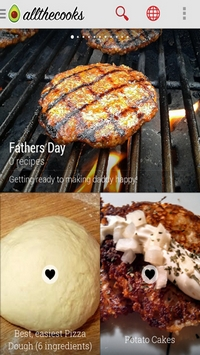
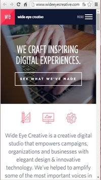

Un contenu adapté
Le contenu de n'importe quel site Internet, qu'il soit orienté mobile ou ordinateur, se doit d'être parfaitement adapté. Dans un site orienté ordinateur, ce n'est pas compliqué, il suffit de ne pas trop encombrer la page et de travailler sur le design comme indiqué dans les critère précedents. De plus, les critères de Amélie Boucher, AFNOR et Jakob Nielsen sont facilement accessibles pour faire ce travail.
Cependant, lorsque le site est orienté mobile, il est nécessaire de faire quelques changements. Pour les zones de sélections par exemple, une case à cocher ne suffira pas pour que l'utilisateur puisse la sélectionner avec le pouce. Il faut adapter la zone de sélection à la case et au texte qui l'accompagne. Un autre exemple qui pourrait vous orienter, dans la conception d'un formulaire, il est possible de gagner de la place en insérant la valeur demandée dans le champ directement, au lieu de la mettre à côté.
Allthecooks Recipes
 Allthecooks Recipes est une application de gestion de recettes. Elle permet d'en importer depuis des sites Internet et également d'organiser les repas en calendriers. Elle est bien adaptée à une utilisation mobile car elle comporte des photographies qui servent à illustrer les propos inscrits dessus. Le texte et la photographie ne sont pas séparés, ils sont combinés mais cela reste lisible, sans pour autant devoir faire appel à un survol du curseur pour faire apparaître le texte, ce qui n'est de toute manière pas faisable sur une application mobile.
Wide Eye Creative
 Le site de Wide Eye Creative est techniquement un bon site responsive. Cependant, il comporte beaucoup de photographies. Elles réagissent au survol du curseur. Hors, dans une application orientée mobile, ce genre d'animation ne peut pas être pris en compte. Il aurait fallut travailler le code responsive du site en supprimant cette fonctionnalité au-delà d'une certaine limite de réduction de l'écran et la remplacer par les textes écrits sous les images, ou la suppression des images pour éviter de faire une page trop haute.